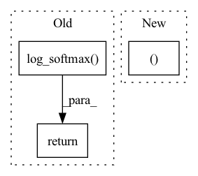

Pattern ID :2669

Before Change
x = self.fc1(x)
x = nn.ReLU()(x)
x = self.fc2(x)
output = F.log_softmax(x, dim=1)
return output
class Mclr_Logistic(nn.Module):
After Change
//pack sequence
packed_embedded = nn.utils.rnn.pack_padded_sequence(embedded, text_lengths)
out, (hidden, cell) = self.lstm(packed_embedded)
// hidden = self.dropout(torch.cat((hidden[-2,:,:], hidden[-1,:,:]), dim = 1))
// output = self.fc1(hidden)
In pattern: SUPERPATTERN
Frequency: 3
Non-data size: 3
Instances
Fragment ID: 15142535
Project Name: tsingz0/pfl-non-iid
Commit Name: 2166a81ffe05bb2c68c8b457df8c2e1fd6a8be02
Time: 2021-07-01
Author: 2719584131@qq.com
File Name: system/flcore/trainmodel/models.py
M Class Name: Net
N Class Name: LSTMNetBase
M Method Name: forward(2)
N Method Name: forward(2)
M Parent Class: nn.Module
N Parent Class: nn.Module
M File Name: system/flcore/trainmodel/models.py
N File Name: system/flcore/trainmodel/models.py
M Start Line: 17
M End Line: 30
N Start Line: 435
N End Line: 461
'>
Before Change
x = F.relu(self.fc1(x))
x = F.relu(self.fc2(x))
x = self.fc3(x)
x = F.log_softmax(x, dim=1)
return x
class ResNetClassifier(nn.Module):
After Change
packed_output, (hidden, cell) = self.lstm(packed_embedded)
//unpack sequence
out, out_lengths = nn.utils.rnn.pad_packed_sequence(packed_output, batch_first=True)
// hidden = torch.cat((hidden[-2,:,:], hidden[-1,:,:]), dim = 1)
// output = self.fc1(hidden)
'>
Fragment ID: 15142533
Project Name: tsingz0/pfl-non-iid
Commit Name: 2166a81ffe05bb2c68c8b457df8c2e1fd6a8be02
Time: 2021-07-01
Author: 2719584131@qq.com
File Name: system/flcore/trainmodel/models.py
M Class Name: CNNCifar
N Class Name: LSTMNet
M Method Name: forward(2)
N Method Name: forward(2)
M Parent Class: nn.Module
N Parent Class: nn.Module
M File Name: system/flcore/trainmodel/models.py
N File Name: system/flcore/trainmodel/models.py
M Start Line: 194
M End Line: 201
N Start Line: 388
N End Line: 417
'>
Before Change
if samples is None:
return self.gumbel_softmax(logits, self._temperature, self._eps, hard=True)
else:
return -torch.sum(-samples * F.log_softmax(logits, -1), -1)
After Change
else:
// Reparametrization trick.
ret = y_soft
return ret, y_soft
'>
Fragment ID: 15142538
Project Name: xiaosu-zhu/mcquic
Commit Name: e12be331e275549e5b8a7ef6a7c8dbf6d4e387bf
Time: 2021-04-08
Author: xiaosu.zhu@outlook.com
File Name: src/mcqc/layers/gumbelSoftmax.py
M Class Name: GumbelSoftmax
N Class Name: GumbelSoftmax
M Method Name: forward(5)
N Method Name: forward(4)
M Parent Class: nn.Module
N Parent Class: nn.Module
M File Name: src/mcqc/layers/gumbelSoftmax.py
N File Name: src/mcqc/layers/gumbelSoftmax.py
M Start Line: 40
M End Line: 44
N Start Line: 8
N End Line: 21